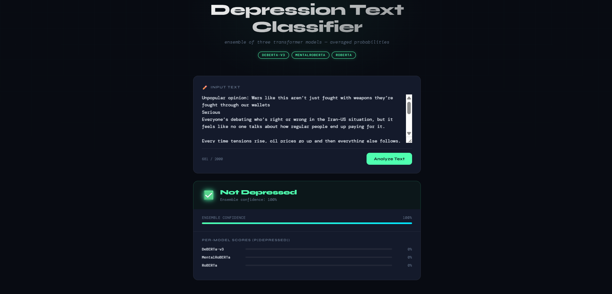
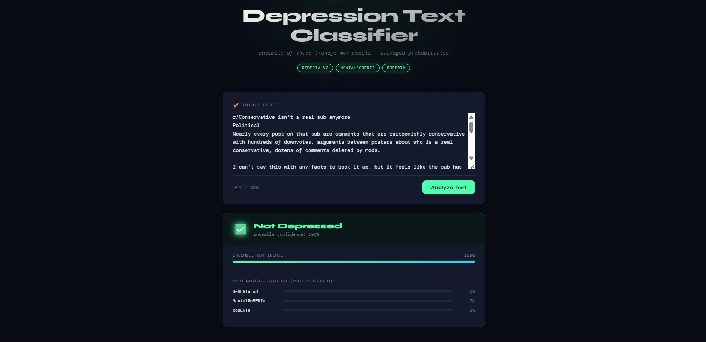
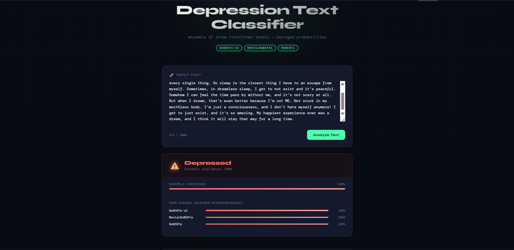
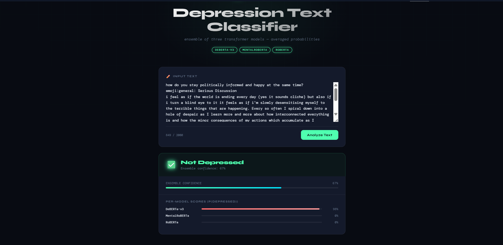

Can a Machine
Read Despair?
Building a Reddit Depression Classifier with RoBERTa, DeBERTa-v3, MentalRoBERTa and Ensemble Learning
Mental health is a crucial issue currently faced worldwide. According to the World Health Organization (WHO) in 2025, more than 1 billion people around the world live with mental health disorders such as anxiety, depression, and other mental disorders. One of the most common mental disorders is depression. According to WHO data in 2025, as much as 4% of the global population, or an estimated 280 to 332 million people, experience depression. Sufferers include 5.7% of adults (4.6% of men and 6.9% of women) and 5.9% of adults aged 70 and older.
Depression, or depressive disorder, is the most common mental health disorder in the world and often goes undetected in its early stages. Along with the increasing use of social media today, the Reddit platform has emerged as a place where users can freely express their thoughts and feelings and engage in discussions with other users. However, unwittingly, the texts written by users on the Reddit platform sometimes contain linguistic signals that can potentially be used to detect a person's psychological condition. This creates an interesting and significant opportunity to build a Natural Language Processing (NLP) model capable of distinguishing between posts written by users experiencing depression and those who are not. Consequently, this can serve as the foundation for an early warning system and a public mental health monitoring tool that can be applied to other social media platforms.
This article outlines the workflow of the NLP model built to solve this problem using a dataset containing more than 2.4 million Reddit posts. The ultimate goal of the developed model is to classify whether a Reddit post uploaded by a user indicates signs of depression or not. To compare the performance of each model, we trained and evaluated 11 different models, ranging from machine learning and deep learning approaches to mental health domain-based transformer models (BERT, RoBERTa, DeBERTa-v3, MentalRoBERTa) using the "Reddit Depression Dataset" from the Kaggle platform.
Dataset
The data source used is the Reddit Depression Dataset, obtained from the Kaggle platform (rishabhkausish/reddit-depression-dataset). This dataset contains posts from various subreddits that have been binary-labeled based on indications of depression. Label = 1 indicates that the post uploaded by the user shows symptoms of depression. Whereas, label = 0 indicates the absence of depressive symptoms. This dataset consists of 2,470,778 Reddit posts collected from 24 subreddits. More detailed statistics regarding the dataset used can be seen in the table below.
Dataset Statistics Table
| Statistics | Value |
|---|---|
| Total Rows | 2,470,778 posts |
| Total Columns | 8 features |
| Label 0 (Non-Depression) | 80.55% |
| Label 1 (Depression) | 19.45% |
The features included in the dataset are as follows. The main feature used in the modeling is the combination of the title and body columns, which is referred to as the text column.
| Column | Data Types | Description |
|---|---|---|
| Unnamed: 0 | Integer | Original row ID from the source dataset |
| subreddit | String | Name of the originating subreddit |
| title | String | Title of the Reddit post |
| body | String | Text content of the Reddit post |
| upvotes | Integer | Number of upvotes received by the post |
| created_utc | Integer | Post creation timestamp (Unix) |
| num_comments | Integer | Number of comments on the post |
| label | Integer | Target: 0 = Non-Depression, 1 = Depression |
Methodology & Pipeline Architecture
Model Pipeline
(clean_text_ml) +
stopword removal
+ new features
Bi-LSTM / Bi-GRU
(clean_text_tr) +
token preservation
(max_len = 256)
DeBERTa / MentalRoBERTa
– Weighted – Average
– Stacking Meta-Learner (LR / LightGBM)
The overall pipeline is designed to compare different modeling approaches in a structured and fair way, starting from raw data up to final deployment.
We begin with raw data, which then goes through data cleaning and label handling. This step ensures that the dataset is consistent, free from obvious noise, and that labels are properly formatted for supervised learning.
Next, the dataset is split into train, validation, and test sets (70/15/15) using stratification. This is important to preserve the class distribution across all splits, especially since the task involves class imbalance.
After splitting, the pipeline branches into two parallel paths:
This path uses the clean_text_ml preprocessing. The output text is simplified and normalized,
followed by TF-IDF vectorization (word-level and character-level). We also add the engineered numeric features
discussed earlier. These combined features are then used as input for XGBoost, LightGBM, Bi-LSTM, and Bi-GRU
models.
This path uses the clean_text_tr preprocessing, where token preservation is prioritized. The
processed text is passed into an AutoTokenizer with a maximum sequence length of 256 tokens. The tokenized
inputs are then used to fine-tune BERT, RoBERTa, DeBERTa-v3, and MentalRoBERTa.
Once both pipelines produce their respective predictions, we move to the ensemble stage. Here, we combine outputs from multiple models using several strategies:
- Weighted averaging, where stronger models contribute more
- Simple averaging, treating all models equally
- Stacking, using a meta-learner (Logistic Regression or LightGBM) to learn how to best combine predictions
From these ensemble results, we perform final model selection, choosing the best-performing configuration based on validation metrics. The selected model is then prepared for deployment, completing the pipeline from raw data to a usable system.
This setup allows us to evaluate each approach independently while also exploring how much performance can be gained by combining them.
EDA (Exploratory Data Analysis)
From the observations conducted at this stage, a class imbalance was identified, where the non-depression class
(label 0) dominates with 80.55% of the total data, while the depression class (label 1) accounts for only
19.45%. This condition became a key consideration in selecting several evaluation metrics (F1-Score, MCC,
AUC-PR) and in applying class_weight='balanced' in most models. At this stage, a histogram
visualization of word count distribution per class was also performed, showing that posts indicating depression
tend to have longer text compared to non-depression posts, particularly within the range of 50–300 words.
Preprocessing & Feature Engineering
During the preprocessing stage, two preprocessing strategies are implemented.
Classical Preprocessing (clean_text_ml)
Used for traditional ML models (XGBoost, LightGBM) and RNNs. The text is fully normalized: all letters are lowercased, URLs and user/subreddit mentions are removed, contractions are expanded ("n't" → "not"), and numbers, punctuation, and stopwords are filtered out. The goal is to produce clean and compact text so that models relying on explicit features like TF-IDF can work more effectively.
Transformer Preprocessing (clean_text_tr)
Used for BERT, RoBERTa, DeBERTa-v3, and MentalRoBERTa. In this case, preprocessing is more conservative.
Instead of removing elements like URLs or mentions, we replace them with special tokens such as
[URL], [USER], and [SUBREDDIT]. The idea is to preserve as much of the
original structure as possible, since transformers are designed to capture contextual meaning. Removing too much
information could reduce useful signals.
Besides the text itself, we also engineered several numeric features for the classical ML models:
| Feature | Description |
|---|---|
| word_count | Word count in the cleaned text |
| char_count | Character count after preprocessing |
| sentence_count | Number of sentences based on NLTK sent_tokenize |
| lexical_diversity | Ratio of unique words to total words (type-token ratio) |
| avg_word_length | Average word length in characters |
| polarity | Sentiment polarity score from TextBlob (range −1 to +1) |
| subjectivity | Subjectivity score from TextBlob (range 0 to 1) |
| punc_ratio | Ratio of punctuation to total characters in the original text |
These features are scaled using StandardScaler before being combined with TF-IDF vectors as input to the classical ML models. This combination allows the model to capture both textual patterns and higher-level characteristics of the text.
Modeling Approach
We trained a total of 11 models from various categories, then compared them head-to-head.
Classical Machine Learning — XGBoost & LightGBM
These two gradient boosting models act as our baselines. The input features combine TF-IDF (both word-level and character-level) with the numeric features we engineered earlier. We include both because, although they are similar in principle, they differ in how trees are constructed. LightGBM is generally faster and more memory-efficient, especially for larger datasets, while XGBoost is more widely used as a benchmark. With a dataset of around 30,000 training samples, both models remain practical and competitive.
Deep Learning (RNN) — Bi-LSTM & Bi-GRU
These models represent a middle ground between classical machine learning and transformers. LSTM and GRU process text sequentially, and the bidirectional setup allows them to capture context from both left-to-right and right-to-left directions. We build a custom vocabulary from the training data, map words into embeddings, and convert each text into a sequence of tokens with a maximum length of 256. Compared to classical models, these architectures are more capable of capturing linguistic patterns, but they still lack the flexibility and generalization ability of large pre-trained transformers.
Pre-trained Transformers — BERT, RoBERTa, DeBERTa-v3, MentalRoBERTa
This is the core part of the modeling approach. We use four transformer-based models:
Serves as a standard baseline. It is pre-trained on Wikipedia and BookCorpus using masked language modeling.
An improved version of BERT, trained on more data and for longer, without the Next Sentence Prediction objective. It is generally more robust in practice.
Uses a more advanced architecture with disentangled attention, separating content and positional information to improve representation quality.
A RoBERTa model that has been further trained on mental health-related text. This makes it more sensitive to psychological context and language patterns specific to the domain.
We chose MentalRoBERTa intentionally. Models that are already exposed to domain-specific data usually require less fine-tuning when applied to similar tasks. In this case, it is expected to better capture subtle signals related to mental health compared to general-purpose models.
All transformer models are fine-tuned using a similar setup: 5 epochs, a small learning rate (around 1e-5 to 2e-5), mixed precision training (AMP) for efficiency, and early stopping to reduce overfitting. To address class imbalance, we apply pos_weight in the loss function.
Ensemble Learning: When One Model Is Not Enough
After all individual models are trained, we enter a very interesting phase called ensemble learning. The idea is simple — instead of relying on a single model, we combine the predictions of several models at once.
Strategy 1: Weighted Average (Top-3 Transformers)
We start by combining DeBERTa-v3, MentalRoBERTa, and RoBERTa. We test two combination methods:
Simple average: The probabilities from the three models are summed and divided by three. It is straightforward, transparent, and requires no extra assumptions.
Optimized weighted average: The weights are automatically determined using Nelder-Mead optimization to maximize the F1-score on the validation set. As a result, each model receives a weight based on its reliability on the validation data.
Strategy 2: Top-4 Transformer Ensemble
This approach is expanded by including the BERT-base model. The models are ranked based on their validation F1 scores, and the weighted average is optimized again. This provides more flexibility. If BERT helps cover the weaknesses of the other models, its weight will increase.
Strategy 3: Stacking with a Meta-Learner
This is the most advanced method. The probabilities of all 8 models (XGBoost, LightGBM, Bi-LSTM, Bi-GRU, BERT, RoBERTa, DeBERTa-v3, MentalRoBERTa) are collected into a single meta-feature matrix. Then, a meta-learner (in this case, Logistic Regression and LightGBM) is trained to learn how to coordinate the outputs from all these models.
An interesting output from the meta-learner is its coefficients. We can see which model the meta-learner trusts the most, providing insight into each model's contribution within the ensemble.
Results & Evaluation
Each model is evaluated on the same held-out test set (3,000 samples) using a consistent evaluation function that reports eight metrics:
- Accuracy — Overall correctness. Included for completeness, although it can be misleading in the presence of class imbalance.
- Precision — The proportion of posts predicted as depressed that are actually depressed.
- Recall — The proportion of truly depressed posts that the model successfully identifies.
- F1-Score — The harmonic mean of precision and recall, and the primary metric used to evaluate model performance.
- Specificity — The true negative rate, representing the proportion of non-depressed posts correctly classified.
- MCC (Matthews Correlation Coefficient) — A balanced metric that remains reliable even under class imbalance.
- AUC-ROC — The area under the Receiver Operating Characteristic curve.
- AUC-PR — The area under the Precision-Recall curve.
In a problem like this, evaluating model performance is not as straightforward as looking at accuracy alone. With more than 80% of the data belonging to the non-depressed class, a model could simply predict "Not Depressed" for every post and still achieve over 80% accuracy, while being completely ineffective in practice.
This imbalance forces us to rethink how performance should be measured. Instead of relying on a single metric, we define a hierarchy of evaluation metrics that better reflects the real-world objective of the task.
At the core of this evaluation is the F1-Score, which serves as the primary metric for model selection and ranking. By combining precision and recall into a single value, F1 ensures that the model is not only capable of detecting depressed posts, but also reliable when making those predictions. In a mental health context, both aspects are equally important. A model that misses too many cases or produces too many false alarms is simply not useful.
To complement this, we use the Matthews Correlation Coefficient (MCC) as a secondary metric. Unlike F1, MCC considers all elements of the confusion matrix, providing a more balanced view of performance across both classes. This makes it particularly useful when comparing models with similar F1 scores, as it highlights those that perform consistently rather than favoring one class.
We also include AUC-ROC to evaluate how well the model separates depressed and non-depressed posts across different thresholds. A high AUC-ROC indicates that the model produces well-ordered probability outputs, which is important for reliable decision-making and threshold tuning.
Although AUC-PR is especially useful for imbalanced datasets, it is treated as a supporting metric rather than a primary one. This is because AUC-PR evaluates performance across all possible thresholds, while the main concern here is how the model performs at the specific threshold used in deployment.
In practice, model selection follows a clear priority. F1-Score is used for ranking, MCC acts as a tiebreaker, and AUC-ROC provides additional validation. Accuracy is reported for completeness but is not used for decision-making.
Other metrics such as precision, recall, and specificity are still reported to provide additional context on model behavior, particularly in understanding trade-offs between false positives and false negatives. However, they are not used as primary criteria for model selection.
Model Performance Summary (sorted by F1)
| Model | Tier | Accuracy | Precision | Recall | F1 | Specificity | MCC | AUC-ROC | AUC-PR |
|---|---|---|---|---|---|---|---|---|---|
| Ensemble Avg (DeBERTa + MentalRoBERTa + RoBERTa) ★ | Ensemble | 0.9647 | 0.8974 | 0.9194 | 0.9083 | 0.9753 | 0.8865 | 0.9874 | 0.9514 |
| Ensemble Weighted (DeBERTa + MentalRoBERTa + RoBERTa) | Ensemble | 0.9647 | 0.8974 | 0.9194 | 0.9083 | 0.9753 | 0.8865 | 0.9876 | 0.9561 |
| Ensemble Top-4 Transformers (Avg) | Ensemble | 0.9640 | 0.8985 | 0.9142 | 0.9062 | 0.9757 | 0.8840 | 0.9887 | 0.9571 |
| Ensemble Top-4 Transformers (Weighted) | Ensemble | 0.9640 | 0.8985 | 0.9142 | 0.9062 | 0.9757 | 0.8840 | 0.9886 | 0.9579 |
| Stacking: LR Meta-Learner | Ensemble | 0.9623 | 0.8754 | 0.9352 | 0.9043 | 0.9687 | 0.8816 | 0.9868 | 0.9523 |
| MentalRoBERTa | Transformer | 0.9603 | 0.8897 | 0.9037 | 0.8966 | 0.9737 | 0.8721 | 0.9833 | 0.9247 |
| DeBERTa-v3 | Transformer | 0.9597 | 0.8866 | 0.9037 | 0.8951 | 0.9728 | 0.8702 | 0.9853 | 0.9477 |
| RoBERTa | Transformer | 0.9587 | 0.8694 | 0.9212 | 0.8946 | 0.9675 | 0.8694 | 0.9854 | 0.9395 |
| Stacking: LightGBM Meta-Learner | Ensemble | 0.9537 | 0.8323 | 0.9475 | 0.8862 | 0.9551 | 0.8601 | 0.9885 | 0.9593 |
| BERT-base | Transformer | 0.9560 | 0.8955 | 0.8704 | 0.8828 | 0.9761 | 0.8558 | 0.9862 | 0.9469 |
| XGBoost | ML | 0.9380 | 0.8203 | 0.8634 | 0.8413 | 0.9555 | 0.8032 | 0.9725 | 0.9201 |
| Bi-LSTM | DL | 0.9340 | 0.7919 | 0.8862 | 0.8364 | 0.9452 | 0.7972 | 0.9709 | 0.9033 |
| LightGBM | ML | 0.9353 | 0.8095 | 0.8634 | 0.8356 | 0.9522 | 0.7960 | 0.9731 | 0.9196 |
| Bi-GRU | DL | 0.9323 | 0.7796 | 0.8984 | 0.8348 | 0.9403 | 0.7957 | 0.9715 | 0.9089 |
Final Model Selection
After evaluating all 14 model configurations across eight metrics, one configuration stands out as the most suitable for deployment: the simple average ensemble of DeBERTa-v3, MentalRoBERTa, and RoBERTa. This model achieved an F1-Score of 0.9083, along with an MCC of 0.8865 and an AUC-ROC of 0.9874 on the held-out test set.
What makes this result convincing is not only the performance itself, but what it implies. An F1-Score above 0.90 on a heavily imbalanced dataset suggests that the model is actually learning meaningful linguistic patterns of distress, rather than relying on class distribution. The high specificity (0.9753) supports this interpretation, showing that the model does not simply over-predict depression at the expense of non-depressed cases.
A reasonable question is why not choose the weighted ensemble, which reaches identical F1 and MCC scores, or the stacking approach, which is more flexible in theory. The answer comes down to the balance between performance and complexity. Since both the simple and weighted ensembles produce the same results on the test set, the simpler approach is preferred. Plain averaging requires no additional optimization, avoids the risk of overfitting to validation data, and is easier to reproduce and maintain in a production setting.
The stacking method, using a Logistic Regression meta-learner, does achieve strong recall (0.9352), which may be useful in certain applications. However, its overall F1 (0.9043) and MCC (0.8816) are slightly lower than the top-3 ensemble. More importantly, stacking introduces an extra layer of dependency. Any update to the base models would require retraining the meta-learner, which increases maintenance effort without providing a clear practical benefit.
The selection of DeBERTa-v3, MentalRoBERTa, and RoBERTa is also intentional. Each model contributes something different. DeBERTa-v3 offers architectural improvements through disentangled attention. MentalRoBERTa brings domain-specific knowledge from mental health data. RoBERTa provides strong general language understanding. Together, they complement each other, and their combined predictions are more stable than any single model alone, as reflected in the evaluation results.
Live Detection Documentation
The section below shows examples of the classifier in action. Each image is an actual prediction from the deployed model, including the input text, the predicted label, and the confidence score.




Summary
This project began with a simple question: can a machine recognize expressions of despair in text? Based on the results, the answer is yes, to a meaningful extent.
Using the Reddit Depression Dataset, we built an end-to-end pipeline that covers classical machine learning, deep learning, and large pre-trained transformer models. The goal was not only to achieve strong performance, but also to make comparisons fair and interpretable across different approaches.
Across the 14 configurations evaluated, a clear pattern emerges. Classical machine learning models such as XGBoost and LightGBM provide a solid baseline, with F1 scores above 0.83. Bidirectional RNN models (Bi-LSTM and Bi-GRU) perform in a similar range, generally improving recall while sacrificing some precision. Transformer-based models represent a clear step forward: BERT, RoBERTa, DeBERTa-v3, and MentalRoBERTa all exceed 0.88 in F1, with DeBERTa-v3 and MentalRoBERTa consistently ranking highest among individual models. Ensemble methods push performance further, with the top-3 transformer ensemble reaching an F1 of 0.9083, the best result observed.
Several takeaways stand out. First, domain-specific pretraining is important. MentalRoBERTa performs on par with larger models like DeBERTa-v3, suggesting that alignment between training data and task domain can compensate for differences in architecture. Second, ensemble learning is effective when the individual models are already strong and complementary. Combining weaker models tends to add noise rather than improve performance. Third, handling class imbalance is essential. Without it, models would default to predicting the majority class, resulting in misleadingly high accuracy but poor real-world usefulness.
There are still limitations to consider. The model is trained on Reddit data, which reflects specific language patterns, demographics, and cultural context. As a result, it may not generalize well to other populations. In addition, the model evaluates posts in isolation and does not account for changes in a user's mental state over time.
These constraints define how the model should be used. It is better suited as a screening tool that highlights potentially concerning content for human review, rather than as a diagnostic system. When applied carefully, it can support broader efforts in monitoring public mental health by surfacing signals that might otherwise be overlooked.
Whether a machine can truly understand despair is still open to interpretation. What this work shows is that it can detect consistent patterns associated with it, with a level of reliability that is practically useful.
References
Alhashmi, S. M., Hashim, S., & Khedr, A. M. (2025). Depression detection using a hybrid CNN-BiGRU-BiLSTM model with BERT embedding and data augmentation. In Proceedings of the 2025 IEEE 22nd International Multi-Conference on Systems, Signals & Devices (SSD) (pp. 340–347). https://doi.org/10.1109/SSD64182.2025.10989873
Ji, S., Zhang, T., Ansari, L., Fu, J., Tiwari, P., & Cambria, E. (2021). MentalBERT: Publicly available pretrained language models for mental healthcare. arXiv. https://arxiv.org/abs/2110.15621
Kaggle. (n.d.). Reddit depression dataset. https://www.kaggle.com/datasets/rishabhkausish/reddit-depression-dataset
Kurniadi, F. I., Paramita, N. L. P. S. P., Sihotang, E. F. A., Anggreainy, M. S., & Zhang, R. (2024). BERT and RoBERTa models for enhanced detection of depression in social media text. Procedia Computer Science, 245, 202–209. https://www.sciencedirect.com/science/article/pii/S1877050924030527
Sharma, A., & Verbeke, W. J. M. I. (2020). Improving Diagnosis of Depression With XGBOOST Machine Learning Model and a Large Biomarkers Dutch Dataset (n = 11,081). Frontiers in Big Data, 3, 15. https://doi.org/10.3389/fdata.2020.00015
Sumolang, P. E., & Maharani, W. (2022). Depression detection on Twitter using bidirectional long short term memory. Building of Informatics, Technology and Science (BITS), 4(2). https://doi.org/10.47065/bits.v4i2.1850
Wang, A. X., Nguyen, B. P., Elliott, T., Mbinta, J. F., Sporle, A., & Simpson, C. R. (2024). Early detection of depression using machine learning and social well-being survey data. In Proceedings of the 2024 16th International Conference on Computer and Automation Engineering (ICCAE) (pp. 181–186). https://doi.org/10.1109/ICCAE59995.2024.10569222
World Health Organization. (n.d.). Depression (mental health topic). https://www.who.int/health-topics/depression
World Health Organization. (2025, September 2). Over a billion people living with mental health conditions; services require urgent scale-up. https://www.who.int/news/item/02-09-2025-…
World Health Organization. (n.d.). Depression fact sheet. https://www.who.int/news-room/fact-sheets/detail/depression